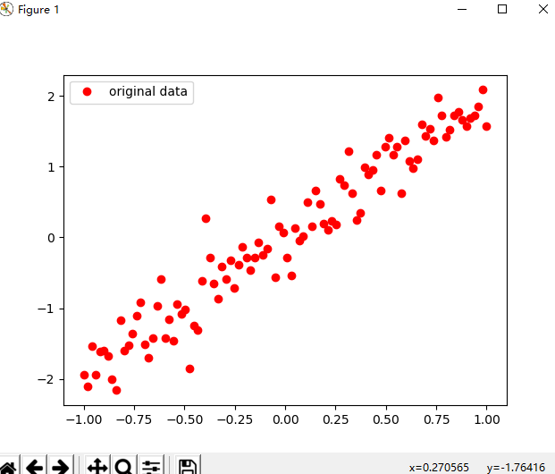
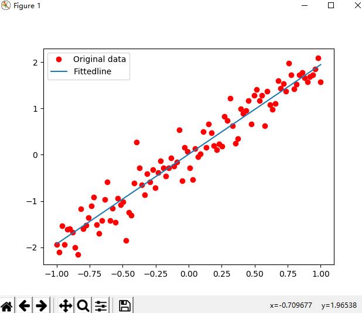
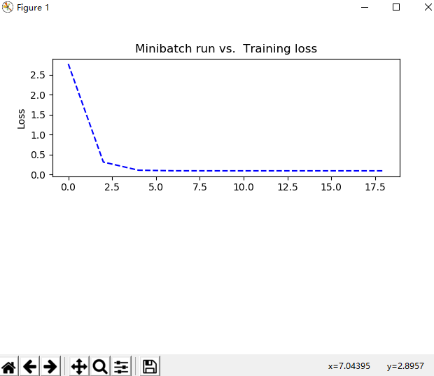
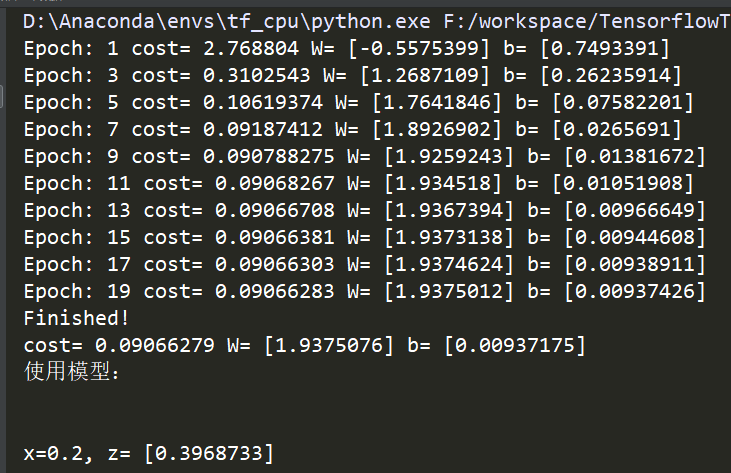

从今天起，我会在这里记录一下学习深度学习所留下的足迹，目的也很简单，手头有近3w个已经标记好正确值得验证码，想要从头训练出一个可以使用的模型，
虽然我也知道网上的相关模型和demo很多，但是还是非常希望自己可以亲手搞一个能用的出来，学习书籍主要是：李金洪老师的《深度学习之Tensorflow 入门、原理与进阶实战》。
另外，在我将验证码识别模型训练出来后也会将源代码、模型，以及近3w个验证码完全开源出来。共勉之。
1 #!/usr/bin/env python
2 # -*- coding: utf-8 -*-
3 # @Time : 2019/9/23 21:27
4 # @Author : SongSa
5 # @Desc :
6 # @File : 拟合二维数据.py
7 # @Software: PyCharm
8
9 import tensorflow as tf
10 import numpy as np
11 import matplotlib.pyplot as plt
12
13 """
14 深度学习分为4个步骤：
15 准备数据
16 搭建模型
17 迭代训练
18 使用模型
19 """
20
21 ########准备数据########
22 train_X = np.linspace(-1, 1, 100)
23 train_Y = 2 * train_X + np.random.randn(100) * 0.3 # y = 2x 但是加入了噪声
24 plt.plot(train_X, train_Y, 'ro', label='original data') # 显示模拟的数据点
25 plt.legend() # 拥有显示图例label
26 plt.show()
27
28
29 plotdata = {"batchsize":[], "loss":[]}
30 def moving_average(a, w=10):
31 if len(a) < w:
32 return a[:]
33 return [val if idx < w else sum(a[(idx-w):idx])/w for idx, val in enumerate(a)]
34
35
36 ########搭建模型########
37 # 模型分为两个方向：正向和反向
38 # 创建模型
39 X = tf.placeholder("float") # 占位符
40 Y = tf.placeholder("float")
41 # 模型参数
42 W = tf.Variable(tf.random_normal([1]), name="weight") # W被初始化为[-1, 1]的随机数，形状为一维的数字
43 b = tf.Variable(tf.zeros([1]), name="bias") # b的初始化为0
44 # 前向结构
45 z = tf.multiply(X, W) + b # tf.multiply()是相乘的函数 z = X * W + b
46
47 # 反向搭建模型
48 # 神经网络在训练时数据流向有两个方向，先通过正向生成一个值，然后观察其与真实值的差距，再通过反向过程将里边的参数进行调整，
49 # 接着在生成正向预测值来与真实值进行比对，如此循环，知道将参数调整为合适值为止，反向传播会引入一些算法来实现对参数的正确调整。
50 cost = tf.reduce_mean(tf.square(Y - z)) # cost等于生成值与真实值的平方差
51 # tf.reduce_mean() 用于计算张量沿着指定轴的平均值
52 # tf.square() 用于计算Y-z的平方
53 learning_rate = 0.01 # 学习率 (值越大表明调整的速度越大，但不精准，反之亦然)
54 optimizer = tf.train.GradientDescentOptimizer(learning_rate).minimize(cost) # 封装好的梯度下降算法
55
56
57 ########迭代训练########
58 # Tensorflow中的任务是通过session来进行的
59 init = tf.global_variables_initializer() # 初始化所有变量
60 #定义参数
61 training_epochs = 20
62 display_stop = 2
63 # 启动session
64 with tf.Session() as sess:
65 sess.run(init)
66 plotdata = {"batchsize":[], "loss":[]} # 存放批次值和损失值
67 for epoch in range(training_epochs):
68 for (x, y) in zip(train_X, train_Y):
69 sess.run(optimizer, feed_dict={X:x, Y:y})
70
71 # 显示训练中的详细信息
72 if epoch % display_stop == 0:
73 loss = sess.run(cost, feed_dict={X:train_X, Y:train_Y})
74 print("Epoch:", epoch+1, "cost=", loss, "W=", sess.run(W), "b=", sess.run(b))
75 if not (loss == "NA"):
76 plotdata['batchsize'].append(epoch)
77 plotdata["loss"].append(loss)
78
79 print("Finished!")
80 print("cost=", sess.run(cost, feed_dict={X:train_X, Y:train_Y}), "W=", sess.run(W), "b=", sess.run(b))
81
82 # 训练模型可视化
83 plt.plot(train_X, train_Y, 'ro', label="Original data")
84 plt.plot(train_X, sess.run(W) * train_X + sess.run(b), label="Fittedline")
85 plt.legend()
86 plt.show()
87
88 plotdata['avgloss'] = moving_average(plotdata["loss"])
89 plt.figure(1)
90 plt.subplot(211)
91 plt.plot(plotdata["batchsize"], plotdata['avgloss'], 'b--')
92 plt.ylabel("Loss")
93 plt.title("Minibatch run vs. Training loss")
94 plt.show()
95
96
97 ########使用模型########
98 print('使用模型：\n\n')
99 print("x=0.2, z=", sess.run(z, feed_dict={X:0.2}))

最后，打个广告: 想了解更多Python关于爬虫、数据分析的内容，获取大量爬虫爬取到的源数据，欢迎大家关注我的微信公众号：悟道Python